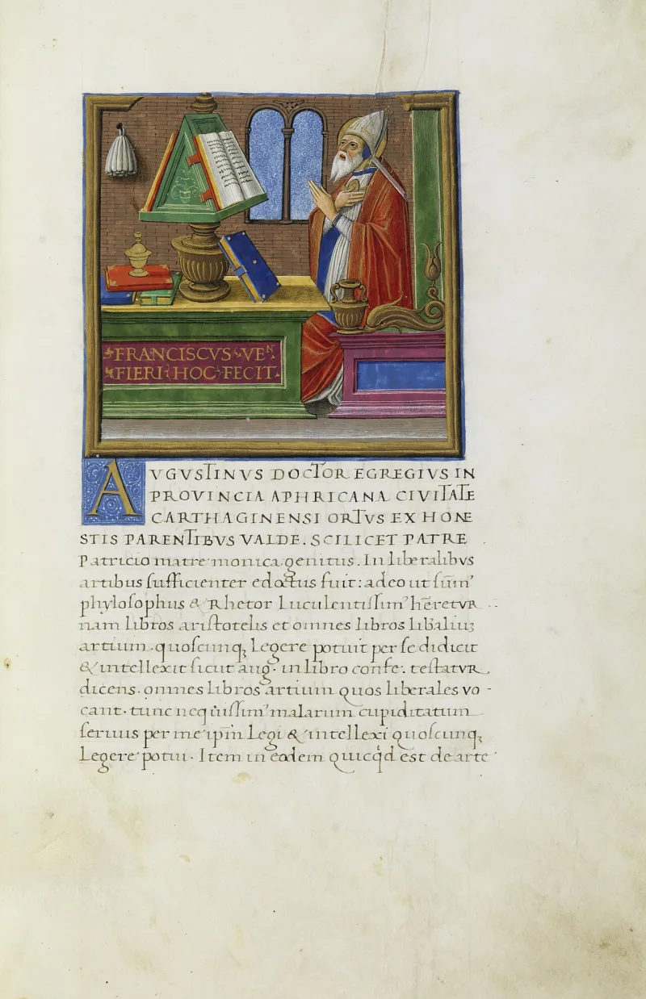
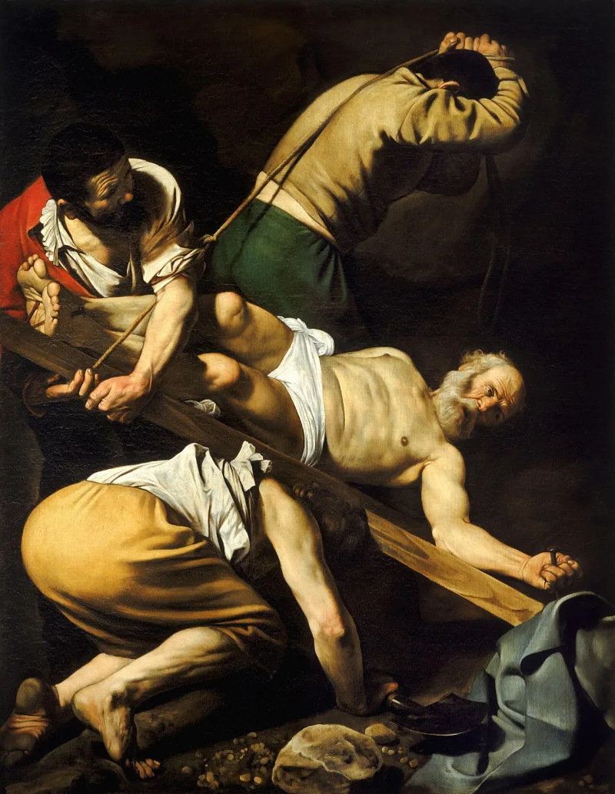
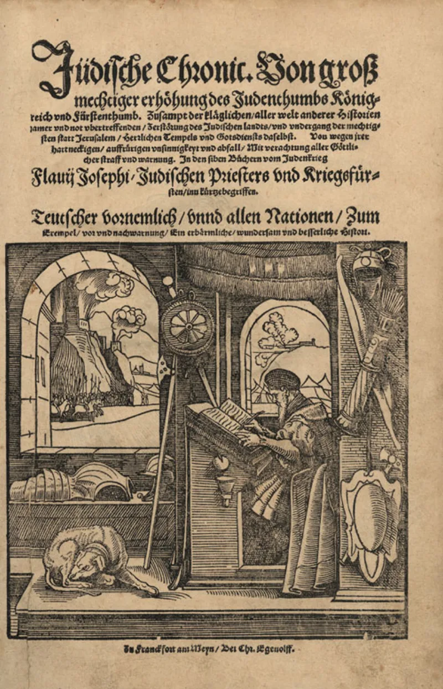

This Christian argument does not hold up. Drop it.
Every one of the twelve was tortured to death, and one recantation would have ended Christianity, yet not one of them broke. It is a staple of sermons and tracts.
There never was one. The New Testament records a single apostolic death, James son of Zebedee (Acts 12:2).
Peter and Paul's deaths in Rome are early and well attested. 1 Clement, written around AD 95, speaks of their sufferings, and Tacitus describes Nero's persecution.
But the specific details, including the upside-down cross, come from later tradition.
For most of the others, the source is a body of apocryphal Acts written from the second to the fourth century. Those texts also feature a talking lion and a resurrected smoked fish.
And early Christian tradition holds that John died of old age at Ephesus, which Eusebius reports in Church History 3.31. That by itself falsifies the claim about all twelve.
"Not one recanted" argues from the absence of records nobody kept. We have no roster of who held firm, because we have no reliable roster of what happened to most of them at all.
It overclaims a real argument into a false one, and the correction is one search away. The moment someone checks Thomas or Bartholomew and finds a third-century romance, everything true you said about the crucifixion, the creed and Paul becomes suspect.
The fix is not to drop the evidence. Shrink the claim to what the sources carry.
Peter, Paul, James son of Zebedee, and James the brother of Jesus, the last attested by Josephus, who was not a Christian. Four well-documented deaths, by men in the strongest possible position to know, beats twelve legendary ones.
It survives being checked. Sean McDowell, an apologist who set out to defend this evidence, is the one who documented how little of it stands.
"I only claim four of them, and I can show you the sources for all four."



No ancient source says this, and John seems to have died of old age.
There is no ancient source that says this, and there never was. The New Testament records one apostolic death, James son of Zebedee (Acts 12:2). Peter and Paul's deaths in Rome are early and well attested. 1 Clement, written around AD 95, speaks of their sufferings, and Tacitus describes Nero's persecution. But the specific details, including the upside-down cross, come from later tradition.
For most of the others, the source is a body of apocryphal Acts composed from the second to the fourth century. Those same texts feature a talking lion and a resurrected smoked fish. Early Christian tradition holds that John died of old age at Ephesus, which Eusebius reports in Church History 3.31. That by itself falsifies the 'all twelve' claim.
The 'not one recanted' half is worse. It argues from the absence of records nobody kept. We have no roster of who held firm, because we have no reliable roster of what happened to most of them at all. Sean McDowell wrote as a Christian apologist, to defend this line of evidence. He is the one who documents how little of it can be established.
Don't use it: claim the four you can source, and drop the other eight.
Avoid it. It overclaims a real argument into a false one, and the correction is a single search away.
The moment a skeptic checks Thomas or Bartholomew and finds a third-century romance, everything true you said about the crucifixion, the creed and Paul is suspect. You have taught them that you repeat things you have not checked.
The fix is not to drop the evidence. Shrink the claim to what the sources carry: Peter, Paul, James son of Zebedee and James the brother of Jesus. The last of those is attested by Josephus, who was not a Christian. Four well-documented deaths, made from the strongest possible position of knowledge, is a better argument than twelve legendary ones. It is better precisely because it survives being checked.